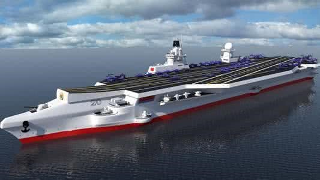

中核集团
2017年核科普开放周活动之第二届全国高校学生课外“核+X”创意大赛
核+动力
主页
概况
核能
核动力
核反应堆
概况
压水堆
基本构成——核能生成系统
主冷却剂系统——内能转换系统
二回路系统——动能输出系统
安全壳
核电站
概况
中国核电站
潜艇核动力装置
概况
中国核潜艇
水面船舰核动力装置
概况
中国核动力航母
空间核能装置
概况
空间核电源
空间核推进装置
发展和研究前景
中、小型核动力发展情况介绍
中、小核动力未来研究的方向
结论
核动力
核动力（英语：Nuclear power，也称原子能）是利用可控核反应来获取能量，从而得到动力、热量和电能。产生核电的工厂被称作核电站，将核能转化为电能的装置包括反应堆和汽轮发电机组。核能在反应堆中被转化为热能，热能将水变为蒸汽推动汽轮发电机组发电。
核动力是利用可控核反应来获取能量，从而得到动力，热量和电能。因为核辐射问题和现在人类还只能控制核裂变，所以核能暂时未能得到大规模的利用。利用核反应来获取能量的原理是：当裂变材料（例如铀-235）在受人为控制的条件下发生核裂变时，核能就会以热的形式被释放出来，这些热量会被用来驱动蒸汽机。蒸汽机可以直接提供动力，也可以连接发电机来产生电能。世界各国军队中的大部分潜艇及航空母舰都以核能为动力，同时，核能每年提供人类获得的所有能量中的7%，或人类获得的所有电能中的15.7%。
中国089核动力航母
西南科技大学
石晓钟 陈怡志 张鸿德
指导教师 段涛
指导教师 段涛